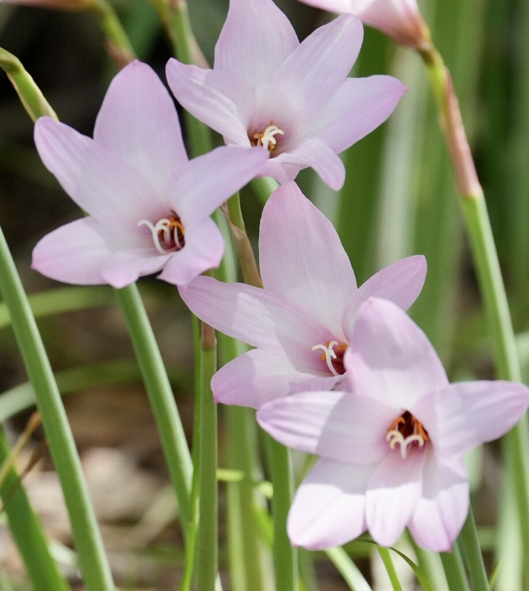

- Named for its trigger: a soaking summer rain after a dry spell brings on a flush of flowers within days, often many at once across a whole planting, then silence again until the next storm.
- Each flower nods at a slight angle on its stalk — a tell-tale trait inherited from its former genus Habranthus. It is one of the features that separates this species from other pink rain lilies.
- A single clump quietly multiplies underground, pushing out bulb offsets that root readily in Florida's sandy soils. A colony that starts as a handful of bulbs can fill an edge planting in just a few seasons without any help.
Non-native. Native to Brazil, Argentina, and Uruguay — subtropical South America — where it grows in seasonally dry grasslands and along watercourses. Member of Amaryllidaceae, the amaryllis family.
It has naturalized well beyond its homeland: Florida populations are established, as are populations in Colombia, South Africa, and Mauritius. All of this spread is traced to its popularity as a low-maintenance ornamental bulb in warm-climate gardens worldwide.
- The Pink Rain Lily earns its name from its trigger: a soaking summer rain after a dry spell brings on a flush of pale pink, funnel-shaped flowers within a few days, often many at once, then the plant rests again until the next storm. Between flushes it is just a clump of narrow, slightly glaucous grassy leaves — which is why the show seems to come from nowhere.
- It is a small bulb from subtropical South America, in the amaryllis family, and it has become a popular, easy edging and naturalizing plant in warm climates worldwide. A botanical detail sets it apart from other pink rain lilies: each flower nods at a slight angle on its scape, a trait it carried over from its former classification in the genus Habranthus.
- The flowers are also perfect — each one carries both functional stamens and a pistil, so a single bloom can set seed on its own.
- Like all its amaryllis relatives, every part contains lycorine and related alkaloids, most concentrated in the bulb. The appeal for gardeners is the timing — a built-in response to the same summer storms that drive Florida's growing season.
Modest wildlife value. The open flowers draw bees and other pollinators during their brief bloom flushes. The plant's main interest is horticultural - its rain-triggered, synchronized flowering.
Pale pink to lavender, funnel-shaped, 2 to 2.5 inches long, held singly on short scapes at a characteristic slight angle; perfect (bisexual), with both stamens and pistil in each bloom; appearing in synchronized flushes a few days after heavy rain.
Narrow, grassy, dark green with a faint grayish waxy coating (glaucous), growing from an underground bulb.
Low clumping bulb; spreads slowly by offsets and seed.
Sudden flushes of pale pink, slightly nodding flowers over grassy foliage in the days after a summer downpour. Between rains, an unremarkable, faintly blue-green grassy clump.
Do not eat this plant. Like daffodils and amaryllis, it contains lycorine and related alkaloids throughout — most concentrated in the bulbs — and ingestion can cause nausea, vomiting, and worse in larger amounts. Keep children and pets from digging up and eating the bulbs.


- © Rhonda Olschefskie (CC-BY-NC), via iNaturalist
- © Zailibeth Perez (CC-BY-NC), via iNaturalist
- © Austin Sibrian (CC-BY-NC), via iNaturalist